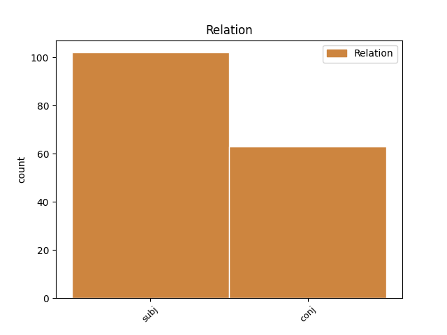
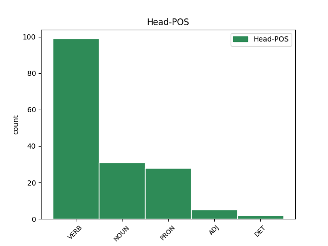
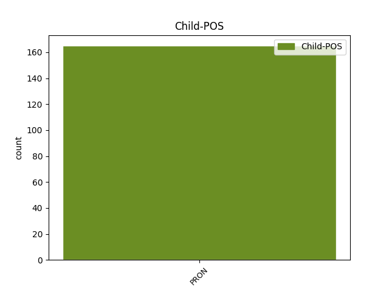

Distribution of features within this leaf



Agreement Rules sorted by frequency.
- When the dependent token is the subject(subj) of the head token, and the dependent token is PRON.
1 πλεονάκις _ _ _ _ 0 _ _ _
2 δὲ _ _ _ _ 0 _ _ _
3 τούτου οὗτος PRON p-s---ng- Case=Gen|Gender=Neut|Number=Sing 4 subj _ _
4 γινομένου γίγνομαι VERB v-sppeng- Case=Gen|Gender=Neut|Number=Sing|Tense=Pres|VerbForm=Part|Voice=Mid 0 _ _ _
5 , _ _ _ _ 0 _ _ _
6 καὶ _ _ _ _ 0 _ _ _
7 τῶν _ _ _ _ 0 _ _ _
8 ἀνδρῶν _ _ _ _ 0 _ _ _
9 τυραννίδος _ _ _ _ 0 _ _ _
10 ἐπιθυμούντων _ _ _ _ 0 _ _ _
11 , _ _ _ _ 0 _ _ _
12 ὁ _ _ _ _ 0 _ _ _
13 δῆμος _ _ _ _ 0 _ _ _
14 ἐπηνέχθη _ _ _ _ 0 _ _ _
15 μιμήσασθαι _ _ _ _ 0 _ _ _
16 τοὺς _ _ _ _ 0 _ _ _
17 Ἀθηναίους _ _ _ _ 0 _ _ _
18 , _ _ _ _ 0 _ _ _
19 καὶ _ _ _ _ 0 _ _ _
20 νόμον _ _ _ _ 0 _ _ _
21 θεῖναι _ _ _ _ 0 _ _ _
22 παραπλήσιον _ _ _ _ 0 _ _ _
23 τῷ _ _ _ _ 0 _ _ _
24 παῤ _ _ _ _ 0 _ _ _
25 ἐκείνοις _ _ _ _ 0 _ _ _
26 γεγραμμένῳ _ _ _ _ 0 _ _ _
27 περὶ _ _ _ _ 0 _ _ _
28 ὀστρακισμοῦ _ _ _ _ 0 _ _ _
29 . _ _ _ _ 0 _ _ _
1 ἢ _ _ _ _ 0 _ _ _
2 τοῖσιν ὁ PRON p-p---md- Case=Dat|Gender=Masc|Number=Plur 0 _ _ _
3 ἢ _ _ _ _ 0 _ _ _
4 τοῖς ὁ PRON p-p---md- Case=Dat|Gender=Masc|Number=Plur 2 conj _ _
5 πόλεμον _ _ _ _ 0 _ _ _
6 αἴρεσθαι _ _ _ _ 0 _ _ _
7 μέγαν _ _ _ _ 0 _ _ _
8 πᾶσ̓ _ _ _ _ 0 _ _ _
9 ἔστ̓ _ _ _ _ 0 _ _ _
10 ἀνάγκη _ _ _ _ 0 _ _ _
11 , _ _ _ _ 0 _ _ _
12 καὶ _ _ _ _ 0 _ _ _
13 γεγόμφωται _ _ _ _ 0 _ _ _
14 σκάφος _ _ _ _ 0 _ _ _
15 στρέβλαισι _ _ _ _ 0 _ _ _
16 ναυτικαῖσιν _ _ _ _ 0 _ _ _
17 ὡς _ _ _ _ 0 _ _ _
18 προσηγμένον _ _ _ _ 0 _ _ _
19 . _ _ _ _ 0 _ _ _
Disagree Examples:
1 ὅτου ὅστις PRON p-s---mg- Case=Gen|Gender=Masc|Number=Sing 4 subj _ _
2 δ̓ _ _ _ _ 0 _ _ _
3 ἀπορρεῖ _ _ _ _ 0 _ _ _
4 μνῆστις μνῆστις NOUN n-s---fn- Case=Nom|Gender=Fem|Number=Sing 0 _ _ _
5 εὖ _ _ _ _ 0 _ _ _
6 πεπονθότος _ _ _ _ 0 _ _ _
7 , _ _ _ _ 0 _ _ _
8 οὐκ _ _ _ _ 0 _ _ _
9 ἂν _ _ _ _ 0 _ _ _
10 γένοιτ̓ _ _ _ _ 0 _ _ _
11 ἔθ̓ _ _ _ _ 0 _ _ _
12 οὗτος _ _ _ _ 0 _ _ _
13 εὐγενὴς _ _ _ _ 0 _ _ _
14 ἀνήρ _ _ _ _ 0 _ _ _
15 . _ _ _ _ 0 _ _ _
1 θάκει _ _ _ _ 0 _ _ _
2 δὲ _ _ _ _ 0 _ _ _
3 προστρόπαιος _ _ _ _ 0 _ _ _
4 ἐν _ _ _ _ 0 _ _ _
5 χεροῖν _ _ _ _ 0 _ _ _
6 ἔχων _ _ _ _ 0 _ _ _
7 κόμας _ _ _ _ 0 _ _ _
8 ἐμὰς ἐμός ADJ a-p---fa- Case=Acc|Gender=Fem|Number=Plur 0 _ _ _
9 καὶ _ _ _ _ 0 _ _ _
10 τῆσδε ὅδε PRON p-s---fg- Case=Gen|Gender=Fem|Number=Sing 8 conj _ _
11 καὶ _ _ _ _ 0 _ _ _
12 σαυτοῦ _ _ _ _ 0 _ _ _
13 τρίτου _ _ _ _ 0 _ _ _
14 , _ _ _ _ 0 _ _ _
15 ἱκτήριον _ _ _ _ 0 _ _ _
16 θησαυρόν _ _ _ _ 0 _ _ _
17 . _ _ _ _ 0 _ _ _
1 ἀλλ̓ _ _ _ _ 0 _ _ _
2 ἡνίκ̓ _ _ _ _ 0 _ _ _
3 ἂν _ _ _ _ 0 _ _ _
4 δὴ _ _ _ _ 0 _ _ _
5 πρὸς _ _ _ _ 0 _ _ _
6 γάμων _ _ _ _ 0 _ _ _
7 ἥκητ̓ _ _ _ _ 0 _ _ _
8 ἀκμάς _ _ _ _ 0 _ _ _
9 , _ _ _ _ 0 _ _ _
10 τίς _ _ _ _ 0 _ _ _
11 οὗτος _ _ _ _ 0 _ _ _
12 ἔσται _ _ _ _ 0 _ _ _
13 , _ _ _ _ 0 _ _ _
14 τίς _ _ _ _ 0 _ _ _
15 παραρρίψει _ _ _ _ 0 _ _ _
16 , _ _ _ _ 0 _ _ _
17 τέκνα _ _ _ _ 0 _ _ _
18 , _ _ _ _ 0 _ _ _
19 τοιαῦτ̓ _ _ _ _ 0 _ _ _
20 ὀνείδη _ _ _ _ 0 _ _ _
21 λαμβάνων _ _ _ _ 0 _ _ _
22 , _ _ _ _ 0 _ _ _
23 ἃ _ _ _ _ 0 _ _ _
24 ταῖς _ _ _ _ 0 _ _ _
25 ἐμαῖς ἐμός ADJ a-p---fd- Case=Dat|Gender=Fem|Number=Plur 0 _ _ _
26 γοναῖσιν _ _ _ _ 0 _ _ _
27 ἔσται _ _ _ _ 0 _ _ _
28 σφῷν σφεῖς PRON p-p---fg- Case=Gen|Gender=Fem|Number=Plur 25 conj _ _
29 θ̓ _ _ _ _ 0 _ _ _
30 ὁμοῦ _ _ _ _ 0 _ _ _
31 δηλήματα _ _ _ _ 0 _ _ _
32 ; _ _ _ _ 0 _ _ _
1 ὅς ὅς PRON p-s---mn- Case=Nom|Gender=Masc|Number=Sing 5 subj _ _
2 τοι _ _ _ _ 0 _ _ _
3 πρῶτος _ _ _ _ 0 _ _ _
4 ἐφῆκε _ _ _ _ 0 _ _ _
5 βέλος βέλος NOUN n-s---na- Case=Acc|Gender=Neut|Number=Sing 0 _ _ _
6 Πατρόκλεες _ _ _ _ 0 _ _ _
7 ἱππεῦ _ _ _ _ 0 _ _ _
8 οὐ _ _ _ _ 0 _ _ _
9 δὲ _ _ _ _ 0 _ _ _
10 δάμασσ̓ _ _ _ _ 0 _ _ _
11 · _ _ _ _ 0 _ _ _
1 ἴστω _ _ _ _ 0 _ _ _
2 νῦν _ _ _ _ 0 _ _ _
3 Ζεὺς _ _ _ _ 0 _ _ _
4 πρῶτα _ _ _ _ 0 _ _ _
5 θεῶν _ _ _ _ 0 _ _ _
6 ὕπατος _ _ _ _ 0 _ _ _
7 καὶ _ _ _ _ 0 _ _ _
8 ἄριστος _ _ _ _ 0 _ _ _
9 Γῆ _ _ _ _ 0 _ _ _
10 τε _ _ _ _ 0 _ _ _
11 καὶ _ _ _ _ 0 _ _ _
12 Ἠέλιος _ _ _ _ 0 _ _ _
13 καὶ _ _ _ _ 0 _ _ _
14 Ἐρινύες _ _ _ _ 0 _ _ _
15 , _ _ _ _ 0 _ _ _
16 αἵ _ _ _ _ 0 _ _ _
17 θ̓ _ _ _ _ 0 _ _ _
18 ὑπὸ _ _ _ _ 0 _ _ _
19 γαῖαν _ _ _ _ 0 _ _ _
20 ἀνθρώπους _ _ _ _ 0 _ _ _
21 τίνυνται _ _ _ _ 0 _ _ _
22 , _ _ _ _ 0 _ _ _
23 ὅτις _ _ _ _ 0 _ _ _
24 κ̓ _ _ _ _ 0 _ _ _
25 ἐπίορκον _ _ _ _ 0 _ _ _
26 ὀμόσσῃ _ _ _ _ 0 _ _ _
27 , _ _ _ _ 0 _ _ _
28 μὴ _ _ _ _ 0 _ _ _
29 μὲν _ _ _ _ 0 _ _ _
30 ἐγὼ _ _ _ _ 0 _ _ _
31 κούρῃ _ _ _ _ 0 _ _ _
32 Βρισηΐδι _ _ _ _ 0 _ _ _
33 χεῖῤ _ _ _ _ 0 _ _ _
34 ἐπένεικα _ _ _ _ 0 _ _ _
35 , _ _ _ _ 0 _ _ _
36 οὔ _ _ _ _ 0 _ _ _
37 τ̓ _ _ _ _ 0 _ _ _
38 εὐνῆς _ _ _ _ 0 _ _ _
39 πρόφασιν _ _ _ _ 0 _ _ _
40 κεχρημένος χράω VERB v-srpemn- Aspect=Perf|Case=Nom|Gender=Masc|Number=Sing|Tense=Past|VerbForm=Part|Voice=Mid 0 _ _ _
41 οὔτέ _ _ _ _ 0 _ _ _
42 τευ τις PRON p-s---ng- Case=Gen|Gender=Neut|Number=Sing 40 conj _ _
43 ἄλλου _ _ _ _ 0 _ _ _
44 . _ _ _ _ 0 _ _ _